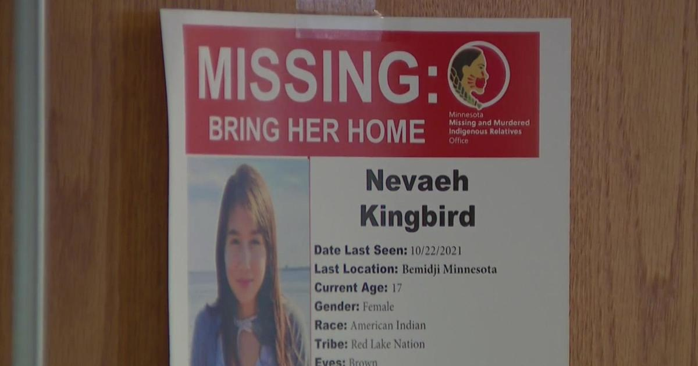

Volunteers come together for Nevaeh Kingbird in largest search ever for missing Indigenous person in MinnesotaBEMIDJI, Minn. — The largest search ever for an Indigenous person in Minnesota wrapped up on Tuesday in Bemidji, where disappeared nearly two years ago. Kingbird was just 15 years old at the time. Volunteers from around Minnesota came together with local, tribal, state and federal investigators. They also looked for clues for two other missing young people. Volunteers came from near and far, drawn to show up to show support for families of the missing. "I might not be from this community, but I feel the pain that this family is feeling. I'm here for Nevaeh Kingbird today," Tamara Desjarlais, Lower Sioux Community Volunteer, said. Volunteers blessed searchers by smudging them, offering protection before they began for the day. Kingbird's mother Teddi Wind allowed herself to feel less alone in her search for answers. "It's been an emotional day. I just want to let everybody know how grateful I am to see the support I've been waiting and hoping for, for so long," Wind said. The search was large in scale. More than 100 volunteers, alongside law enforcement, conducting grid searches covering over 150 acres in Bemidji. "Really they're out there looking for anything, clothing, looking for anything that might help lead us to answers," Bemidji Police Chief Mike Mastin said. Evidence that can lead them to Kingbird and two others: Damon Boyd who went missing in 2014 and . "Our new plight of missing people. But in my heart too as well is I wish we would've had something like this when my son went missing almost 7 years ago," Theresa Jourdain, Jeremy Jourdain's mother, said. She was on the front lines of the search. What's changed is the creation of the state office of Missing and Murdered Indigenous Relatives in 2021. RELATED: "Our office was created because research found that Indigenous people experience violence at a higher rate than any other race in the state of Minnesota," MMIR office director. It was the 13th organized search for Kingbird. Bemidji police brought in K-9s, conducted ground, aerial and underwater searches. But this is the biggest: with tribes, non-profits, police, fire, state and federal agencies all working in coordination. "I don't know how to explain, it just feels different from the other ones," Wind said. The terrain covered can be tough, in many areas they searched over fallen trees, under branches, trying to move heavy brush. "It's very wooded. The grasses are kind of tall, it's kind of dangerous and it's thick," said Lissa Yellow Bird Chase with Sahnish Scouts K-9 team. They pushed on, in a line, arms-length apart, checking every corner of the area assigned. "I'm just hoping we can find something to help bring her home you know. It's been a long time," Kingbird's sister LaKaylee Kingbird said. The effort unwavering. "Nevaeh is very loved. I just want her to know that we'll never give up on looking for her," Wind said. Bemidji Police say they did collect some items of interest for testing. Soon they'll determine the next steps in the investigation. for more features. |
 |